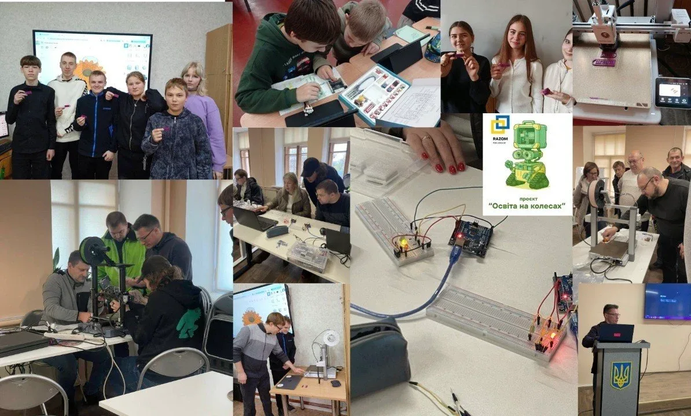

8
проєктів
Освітні курси, події, грантові та соціальні ініціативи, реалізовані Федерацією.
Відкриваємо безкоштовні гуртки, навчаємо вчителів, проводимо змагання та допомагаємо школам отримати сучасне STEM-обладнання. За час роботи реалізували 8 проєктів і навчили понад 50 учасників курсів та тренінгів.

Громадська організація, що розвиває технічну освіту та інженерне мислення у дітей і молоді.
Зробити сучасну технічну освіту доступною кожній дитині незалежно від доходу родини чи місця проживання.
м. Прилуки, Прилуцький район, Чернігівська область
open_in_newСистемна робота з розвитку технічної освіти в місті та громаді
Курси для вчителів та учнів, методична підтримка й навчальні матеріали з робототехніки та STEM.
Гуртки, лабораторії та практичні заняття з Arduino, 3D-друку та моделювання.
Запуск STEM-просторів та консультації.
Хакатони, фестивалі, майстер-класи.
Гуртки для дітей громади з супроводом менторів та волонтерів.
Ремонт та передача комп'ютерної техніки школам і учням.
Ключові цифри діяльності Федерації за час роботи
Освітні курси, події, грантові та соціальні ініціативи, реалізовані Федерацією.
4 групи безкоштовного курсу електроніки за підтримки Nova Ukraine (09.2024–02.2025).
Грантовий курс «Перший крок у кібербезпеку» у межах Meet and Code від ГУРТ.
Очний практичний курс «Робототехніка в моїй школі» для педагогів Прилук (05.2024–06.2024).
Черговий етап «ІТ-благодійності» — стаціонарні комп'ютери відремонтовано і передано учням ЗОШ.
Kyiv Maker Faire 2024 та RepRapUA 2024 — презентація напрацювань на національній сцені.